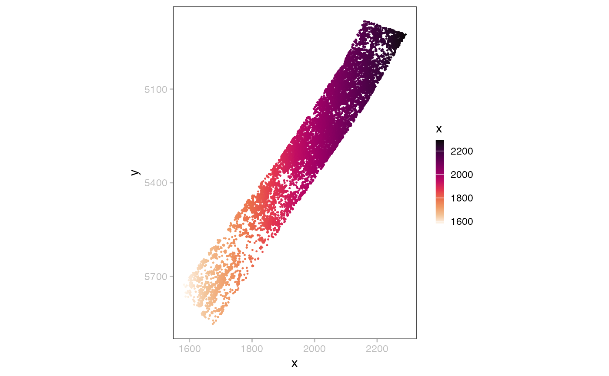

The `PointFrame` class
PointFrame.RdThe `PointFrame` class
Usage
PointFrame(data = data.frame(), meta = Zattrs(), metadata = list(), ...)
# S4 method for class 'PointFrame'
names(x)
# S4 method for class 'PointFrame'
dim(x)
# S4 method for class 'PointFrame'
length(x)
# S4 method for class 'PointFrame'
x$name
# S4 method for class 'PointFrame,ANY,ANY'
x[[i, j, ...]]
# S4 method for class 'PointFrame,numeric,ANY,ANY'
x[i, j, ..., drop = TRUE]
# S4 method for class 'PointFrame'
as.data.frame(x)Examples
tf = tempfile()
dir.create(tf)
base <- unzip_merfish_demo(tf)
#> returning path to cached zip
x <- file.path(base, "points", "single_molecule")
(p <- readPoint(x))
#> class: PointFrame
#> count: 3714642
#> data(3): x y cell_type
head(as.data.frame(data(p)))
#> # A tibble: 6 × 4
#> x y cell_type `__null_dask_index__`
#> <dbl> <dbl> <fct> <int>
#> 1 1279. 6021. outside_VISp 0
#> 2 1327. 6024. outside_VISp 1
#> 3 1292. 6059. outside_VISp 2
#> 4 1301. 6098. outside_VISp 3
#> 5 1232. 6103. outside_VISp 4
#> 6 1239. 6112. outside_VISp 5
(q <- dplyr::filter(p, cell_type == "VISp_wm"))
#> class: PointFrame
#> count: 45634
#> data(3): x y cell_type
plotPoint(q, c="x", s=0.2)
